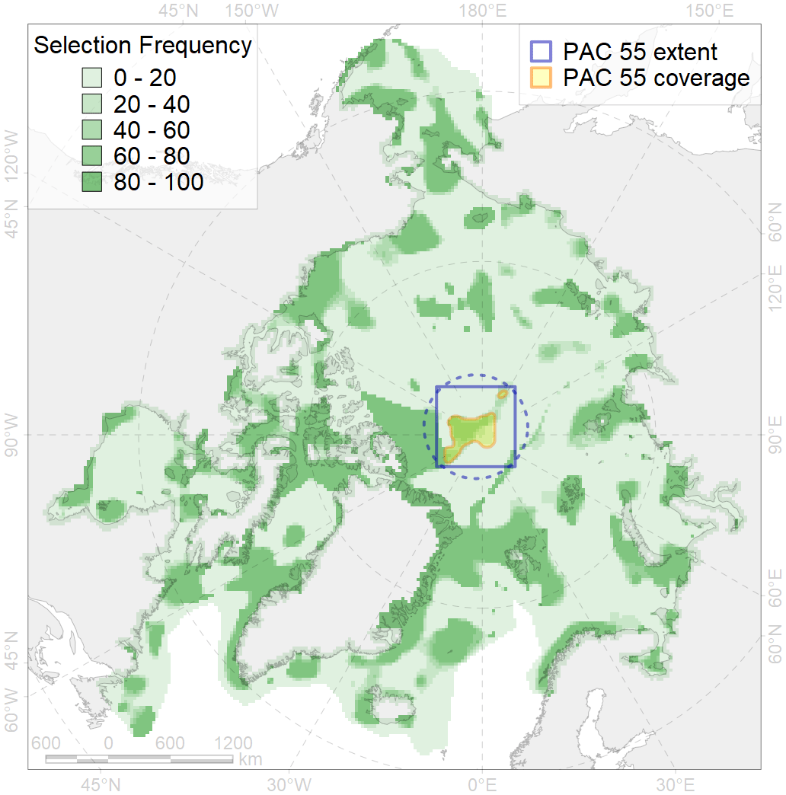
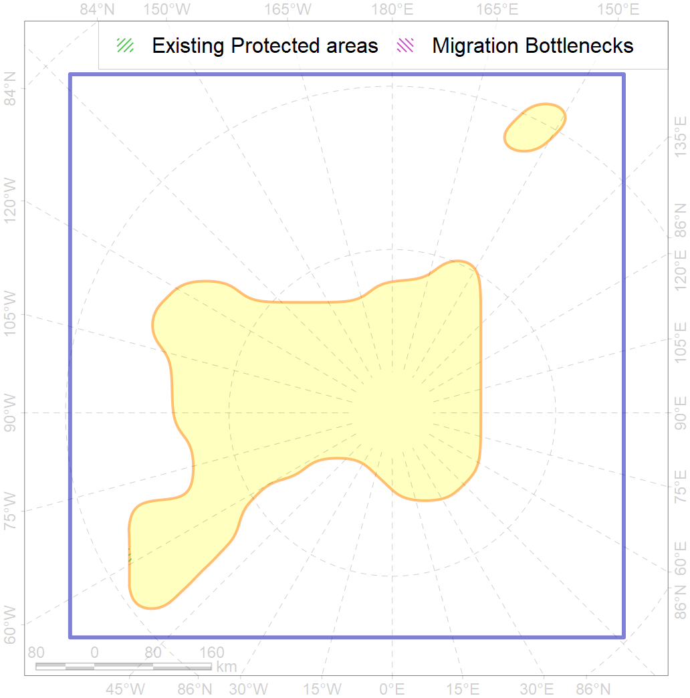

55
For more information regarding this PAC and to conduct custom spatial analysis using the PAC data or any spatial query, please consult Accenter.

0
CFs entirely within the PAC area
3
CFs at least 25% within the PAC area
1
CFs with at least 50% of their target achieved in the PAC
4
CFs with at least half of their target achieved in the PAC
| CF ID | CF Name | Proportion in the PAC | Conservation Target | Contribution to ArcNet Target Achievement | PAC’s Contribution to the Achieved Target |
|---|---|---|---|---|---|
| 7198 | VI.3.3. Ridges | 96.2% | 75.7% | 103.8% | 98.3% |
| 7202 | VI.4.3. Ridges | 40.4% | 100.0% | 40.4% | 40.4% |
| 7197 | VI.3.2. Terraces | 33.6% | 43.5% | 53.8% | 38.1% |
| 7196 | VI.3. Lomonosov Ridge VI.3.1. Plateaus | 23.5% | 50.0% | 34.3% | 34.2% |
| 7199 | VI.3.7. Canyons | 19.5% | 39.1% | 39.2% | 38.2% |
| 7032 | Makarov Basin abyssal region | 17.0% | 17.6% | 84.0% | 83.2% |
| 7031 | Lomonosov Ridge region | 10.6% | 15.2% | 54.9% | 38.2% |
| 7182 | VII.3.4. Abyssal mountains | 6.9% | 16.6% | 37.5% | 29.1% |
| 7022 | Canada - North Greenland bathyal region | 5.5% | 9.5% | 41.6% | 7.5% |
| 7183 | VII.3.5. Deep parts of canyons (below slope) | 5.4% | 23.1% | 18.4% | 13.2% |
| 7176 | VII.2.2. Abyssal plains | 4.8% | 8.5% | 15.6% | 15.6% |
| 3049 | Multiyear Ice distribution in September in the Central Arctic LME | 4.4% | 18.0% | 16.3% | 16.3% |
| 7017 | Amundsen and Nansen Basins abyssal region | 3.0% | 7.0% | 14.4% | 7.9% |
| 4096 | Range of the Glacial eelpout (Lycodes frigidus) | 2.5% | 6.0% | 28.1% | 7.2% |
| 7181 | VII.3.3. Abyssal hills | 2.4% | 7.2% | 27.5% | 13.3% |
| 4079 | Fish zoogeography, Arctic Region, Arctic Abyssal Province (Scandian, Central-Arctic and Baffin Deep-sea Districts ) | 2.4% | 4.0% | 40.3% | 6.9% |